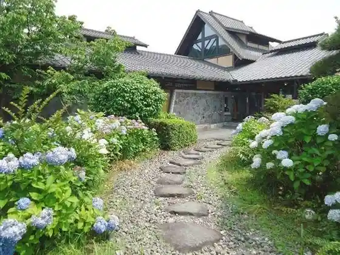
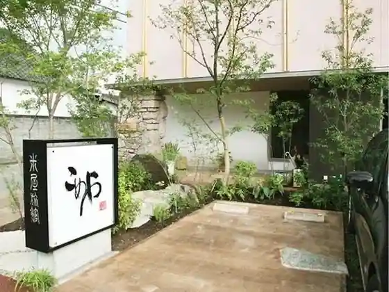
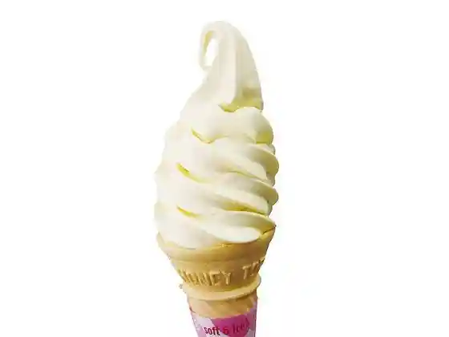

Ajisai Baths
Uto, Kumamoto · 0964-24-3456 · Official / source link

Bijinesu Hatago Komeya
Uto, Kumamoto · 0964-22-0261 · Official / source link

Roadside Station Uto Mariina Okoshiki Kan (Neburusofuto)
Uto, Kumamoto · 0964-27-1788 · Official / source link

Te Tsukuri Aji Workshop Hi no Kuni Ya
Uto, Kumamoto · 0964-27-1092 · Official / source link
Tateoka Nature Park
Uto, Kumamoto · 0964-22-1111 · Official / source link
Mikoshi Rai Coast (Okoshikikaigan)
Uto, Kumamoto · 0964-22-1111 · Official / source link
Todoroki Suigen
Uto, Kumamoto · 0964-22-1111 · Official / source link
Sumiyoshi Nature Park
Uto, Kumamoto · 0964-22-1111 · Official / source link
Uto Castle Ruins (Konishi Shiro)
Uto, Kumamoto · 0964-23-0156 · Official / source link
Todoroki Izumi Museum
Uto, Kumamoto · 0964-23-0156 · Official / source link
Uto Odaiko Shuzo Kan
Uto, Kumamoto · 0964-22-1930 · Official / source link
Awashima Shrine
Uto, Kumamoto · 0964-22-1197 · Official / source link
Ao Dogama
Uto, Kumamoto · 0964-27-0777 · Official / source link
Osabe Ta Umi Toko Michi (Nagabetakaishoro)
Uto, Kumamoto · 0964-22-1111 · Official / source link
Furyu Shima (Tawarejima)
Uto, Kumamoto · 0964-22-1111 · Official / source link
Roadside Station Uto Mariina Okoshiki Kan
Uto, Kumamoto · 0964-27-1788 · Official / source link
Jimbe Zo
Uto, Kumamoto · 0964-22-1111 · Official / source link